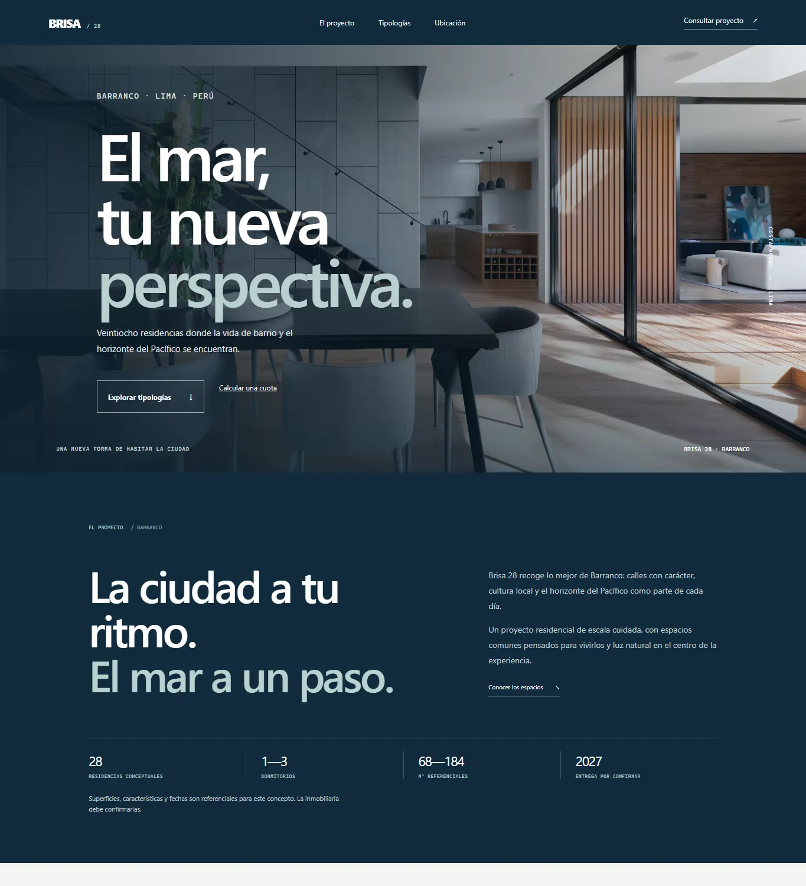

Objetivo
Presentar un proyecto residencial y dar herramientas para que el visitante investigue distintas tipologías.
Una presentación residencial conceptual para explorar tipologías, comparar distribuciones y estimar una cuota orientativa.
Brisa 28 propone una residencia en Barranco y transforma la página en un recorrido por ubicación, espacios y tipologías. Los controles permiten guardar opciones, compararlas y calcular una estimación sencilla de financiamiento.
Brisa 28 es un concepto ficticio. La disponibilidad, metrajes, precios, vistas y condiciones que aparecen en la demo son ilustrativos y no corresponden a una oferta inmobiliaria.
Presentar un proyecto residencial y dar herramientas para que el visitante investigue distintas tipologías.
Los proyectos inmobiliarios suelen repartir la información entre planos, características y formularios. Este concepto reúne opciones y facilita compararlas en un mismo recorrido.
Personas que exploran una posible vivienda y necesitan entender diferencias entre espacios antes de consultar.
La fotografía arquitectónica ocupa la portada para dar contexto. Los bloques oscuros, la tipografía compacta y los detalles de ubicación construyen una presentación sobria inspirada en Barranco.
Filtros y orden por tipología, favoritos locales, comparación de opciones y simulador con valores ingresados por la persona. La consulta prepara un mensaje en el cliente de correo; no hay inventario ni equipo comercial conectado.
HTML, CSS y JavaScript nativos; persistencia de favoritos en localStorage y cálculo matemático en el navegador.
El simulador y el comparador se pueden probar desde la demostración publicada con datos de ejemplo.


VOLVER AL INICIO